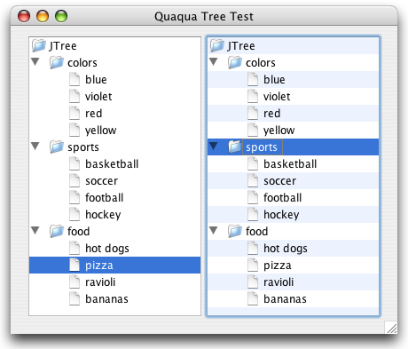

Property |
Type | Notes |
|---|---|---|
|
java.lang.String |
Values: "plain", "striped" |
The Quaqua Look and Feel supports trees with plain style and with striped style (aka alternating row colors).
The picture below shows the two styles.

You can specify the desired style by setting the client property Quaqua.Tree.style to
striped or to plain. If you don't specify a value,
the plain style is used.
|
If you implement a TreeCellRenderer on your own, make sure that the renderer component is non-opaque. If your renderer component is opaque, the component obscurs the stripes of a striped tree.